|
Лекция 48.
|
| Эксперимент (пример решения) |
Риск (Р), Y |
Кредитная история (К), X1 |
Долг (Дг), X2 |
Поручительство (П), X3 |
Доход (Дд), X4 |
|---|---|---|---|---|---|
| 1 | В | П | В | Н | 0 - 15 |
| 2 | В | Н | В | Н | 15 - 35 |
| 3 | С | Н | Н | Н | 15 - 35 |
| 4 | В | Н | Н | Н | 0 - 15 |
| 5 | Н | Н | Н | Н | >35 |
| 6 | Н | Н | В | А | >35 |
| 7 | В | П | Н | Н | 0 - 15 |
| 8 | С | П | Н | А | >35 |
| 9 | Н | Х | Н | Н | >35 |
| 10 | Н | Х | В | А | >35 |
| 11 | В | Х | В | Н | 0 - 15 |
| 12 | С | Х | В | Н | 15 - 35 |
| 13 | Н | Х | В | Н | > |
| 14 | В | П | В | Н | 15 - 35 |
В столбце «Риск» базы данных отмечены решения, сделанные на практике экспертом. В столбце «Эксперимент. Пример решения» - конкретный случай, номер записи базы данных.
Если у нас есть данные в виде таблицы экспериментов, то можно сходу построить максимальное дерево, у которого 3 (КИ) * 2 (Дг) * 2 (П) * 3 (Дд) = 36 листьев в кроне. Дерево на каждом ярусе как бы задает вопросы: Какая кредитная история? Какой долг? Чтобы получить результат, надо давать ответы, передвигаясь по веткам дерева.
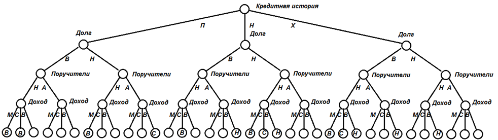
По сути пока это дерево просто повторяет табличные данные, закономерность не видна. Поэтому попробуем найти минимальное дерево и сконцентрировать знание. Для этого нам надо научиться измерять информацию.
Формула Шеннона измерения информации
Сыграем в игру. В шкафу имеется N полок, пронумерованных сверху вниз, на каждой из которых я могу спрятать свою книгу. Допустим N=8. Вы должны задать мне минимум вопросов, на которые я буду отвечать только Да (1) или Нет (0), чтобы определить на какой полке находится загаданная мною книга. Принимая от меня ответ 0 или 1, вы каждый раз получаете 1 бит информации.
Бит – двоичная цифра, единица измерения количества информации. Бит принимает всегда одно из двух значений: 0 или 1.
Сначала неопределённость ситуации высокая, книга равновероятно спрятана на одной из восьми полок. Вероятность угадать полку сходу равна 1/N.
| Вероятность в угадывании полки до задания вопроса | Вопрос | Ответ | Суммарное количество информации после получения ответа | Вероятность в угадывании полки после получения ответа |
|---|---|---|---|---|
| 1/8 | Книга выше четвертой полки (включая полку №4)? | Да, получен ответ «1» | 1 бит | 1/4 |
| 1/4 | Книга выше второй полки (включая полку №2)? | Нет, получен ответ «0» | 2 бита | 1/2 |
| 1/2 | Книга на третьей полке? | Да, получен ответ «1» | 3 бита | 1 |
Ответ «книга на третьей полке» вычислен после получения приёмником трёх бит информации: 1,0,1.
Если бы полок было 16, то понадобилось бы 4 вопроса. При 32 полках – 5 вопросов. То есть 2i=N, где
i - количество информации, N - множество равновероятного двоичного выбора. Значит можно посчитать необходимое количество информации i для прояснения
ситуации по формуле: i=log2N. Так как вероятность Р нахождения книги на полке равна P=1/N, то
i=log2N = log2(1/P)= log21- log2P= = 0 - log2P= - log2P.
А также: log2P =lgP/lg2=lgP/ 0.301=3.32*lgP.
Первым получил формулу, связывающую информацию с вероятностью, Р.В.Л. Хартли.
Если на полках находится разное количество книг, то вероятность найти задуманную мною книгу на разных полках разная. Поэтому Клод Шеннон усовершенствовал формулу Хартли:
\( i = -\sum_{j=1}^N P_j *log_2 P_j \)
установив весовые коэффициенты Pj перед информацией, вычисленной для каждой j-той полки. Естественно, что для полной группы несовместных событий:
P1 + P2 + … = 1.
Энтропия – это мера хаоса, информация – мера упорядоченности.
Неопределенность положений элементов в системе монотонно нелинейно соответствует значению энтропии системы. Чем больше неопределенность (хаос), тем больше энтропия системы. Энтропия гасится информацией. Когда мы получаем очередной квант информации, неопределенность уменьшается. Увеличение информации приводит к уменьшению энтропии и наоборот. Большое значение энтропии – это «хаос». «Порядок» соответствует минимальной энтропии. Получение информации системой переводит хаос в порядок, упорядочивает структуру системы, повышает её предсказуемость за счёт понимания закономерности её поведения.
Посмотрите на график формулы Шеннона для случая P1 + P2 = 1. Если включить телевизор на канале, где нет передачи, то вы увидите «белый шум» - беспорядочное мелькание белых точек на чёрном экране. Предсказать, где и когда появится очередная точка, невозможно, неопределённость положения любой из них максимальна. У белого шума самая большая энтропия. Информации в такой картинке ноль. Это хаос. Жить в мире, где нет никаких законов, где всё непредсказуемо, – невозможно.
Обратная картина наблюдается, когда энтропия равна нулю. Картинка на экране в этом случае абсолютно предсказуема: или полностью белый экран, или полностью чёрный. Здесь царит абсолютный порядок. Предсказать цвет точки в любом месте экрана, в силу имеющейся закономерности, легко. Информация, полученная системой при переходе от хаоса к абсолютному порядку, - максимальна.
Такой полностью детерминированный мир, который выглядит как однородная монотонная структура, повторяющаяся во всех своих частях, хотя и познаваем и имеет чёткий и простой закон своего построения и поведения, мало кому интересен. В нём ничего никогда не происходит. Это мир полного порядка. Интерес, представляет какое-то разнообразие, но имеющее смысл, закономерность, некоторое значение энтропии, симметрия.
Экранная картинка, которая соответствует точкам между хаосом и порядком на графике, конечно имеет некоторую закономерность, но только с определённой долей вероятности. Передвигаясь по экрану от точки к точке, можно предсказать цвет соседней точки, но не точно, а только с определённой вероятностью. Можно сказать, что автомобиль в следующем кадре передвинется, но какая точка на экране в следующий момент изменит цвет абсолютно точно сказать нельзя. Большинство точек цвет не изменят. Справа картинка в прямых цветах, слева – в цветовой инверсии, но они одинаково информативны. Количество информации равно изменению энтропии при переходе системы из одного состояния в другое. Информация о системе растёт, когда энтропия уменьшается, и наоборот.
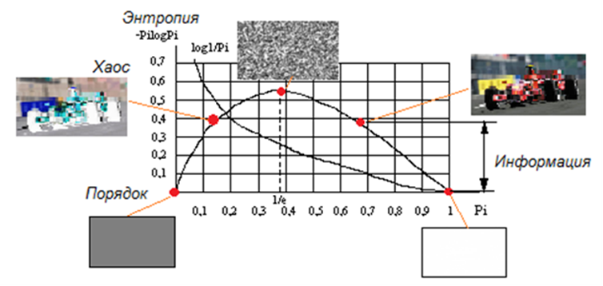
Алгоритм построения индуктивных решений (ID3)
Идея метода ID3 (Induction of Decision Trees) заключается в том, чтобы, измеряя информацию вопросов и ответов, выбрать такие из них, чтобы как можно быстрее погасить неопределённость результата. Это значит, что происходит поиск минимального дерева. Надо найти самую краткую запись, позволяющую описать всё или большинство данных, максимально сжать информацию из таблицы данных в аналитическую формулу (модель).
Начнем строить дерево с верхнего уровня. На нём можно задать один из четырех вопросов: про доход Дд, про кредитную историю К, про долг Дг или поручителей П. Установить надо такой узел, который быстрее всего ведёт к решению, то есть самый информативный.
Испытаем узел Дд. Вычислим, сколько он содержит неопределённости?
У него в дереве может быть три возможных продолжения (0-15, 15-35, >35). Оценим каждую ветвь. По таблице видно, что в ветвь Дд=(0-15) попадают примеры 1,4,7,11, которые все ведут к случаю Риск=В.
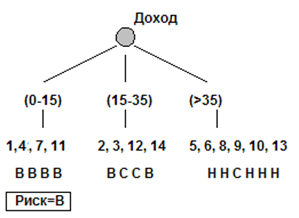
Неопределённость, которая содержится в этой ветви, равна 0, так как по формуле Шеннона i = - 4/4*log2(4/4)=0 (бит). (Минимальная неопределённость!!)
В этой ветви, после ответа о доходе, неопределённости не осталось. Энтропия минимальна, получен максимум информации, что соответствует полному порядку. Продолжать эту ветвь (задавать ещё какие-то вопросы) далее нет смысла. В принципе ясно, что в таблице обнаружена закономерность «если ваш доход меньше 15, то кредит вам не выдадут из-за высокого риска».
По таблице видно, что в ветвь Дд=(15-35) попадают примеры 2,3,12,14. Примеры 2 и 14 ведут к случаю Риск=В. Примеры 3 и 12 ведут к случаю Риск=С. Неопределённость, которая содержится в этой ветви, равна -(2/4*log2(2/4) + 2/4*log2(2/4)) = 1 (бит). (Неопределенность по сравнению с предыдущим случаем больше!! Полная информация здесь еще не получена – при среднем доходе риск бывает и высокий, и средний, 50 на 50. Придется задавать ещё дополнительные вопросы, чтобы получить полную ясность.)
По таблице видно, что в ветвь Дд=(>35) попадают примеры 5,6,8,9,10,13. Пример 8 ведет к случаю Риск=С. Примеры 5,6,9,10,13 ведут к случаю Риск=Н. Неопределённость, которая содержится в этой ветви, равна –(1/6*log2(1/6) + 5/6*log2(5/6))=0.65 (бит). (6 исходов, 1 и 5 – количество исходов по каждому из значений).
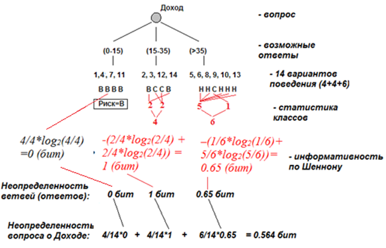
Итак, если Дд установить в качестве узла, то это даст неопределённость вершины при поиске решения 4/14*0+4/14*1+6/14*0.65 = 0.564 (бит). Здесь, всего 14 возможных исходов, 4, 4, 6 – количество исходов в каждой из ветвей, 0, 1, 0.65 – неопределённости каждой из этих ветвей.
На рисунках представлены расчёты для остальных вариантов в качестве первого вопроса.
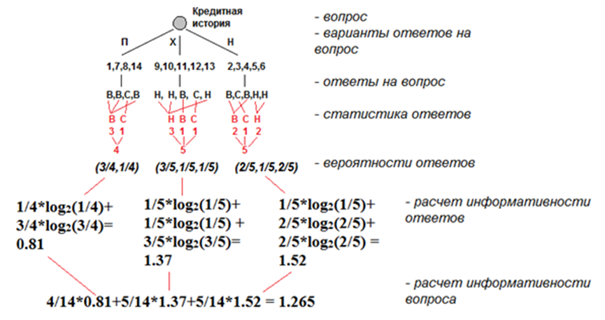
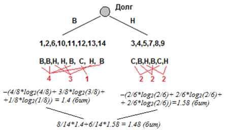
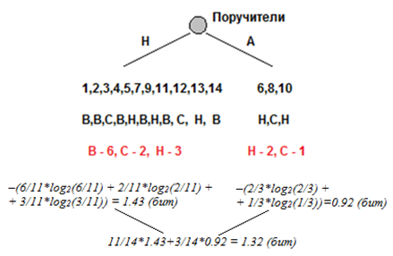
Выберем наименьшую оставшуюся энтропию после каждого из возможных четырёх вопросов: min {0.564, 1.26, 1.48, 1.32} = 0.564 (бит), что соответствует вершине Доход. В образовавшемся дереве содержатся две недоопределённые ветви. В каждой может стоять один из трёх оставшихся вопросов: Кредитная история, Долг, Поручители. Расчёт энтропии надо вести по оставшимся в этих ветвях примерам.
| Для ветви Дд=(15-35) |
Примеры: 2,3,12,14. Риск = В,С,С,В. |
Энтропии вопросов КИ, Дг, П |
| Кредитная история | Для КИ=П (пример 2): 1/1*log2(1/1)=0 бит. Для КИ=Х (пример 3): 1/1*log2(1/1)=0 бит. Для КИ=Н (примеры 12,14): –(1/2*log2(1/2) +1/2*log2(1/2)) = 1 бит. |
1/4*0+1/4*0+2/4*1= 0.5 бит. |
| Долг | Для Дг=В (примеры 2,12,14): –(2/3*log2(2/3)) + 1/3*log2(1/3) = 0.92 бит. Для Дг=Н (пример 3): 1/1*log2(1/1) =0 бит. |
3/4*0.92+1/4*0 = 0.689 бит |
| Поручители | Для П=Н (примеры 2,3,12,14): –(2/4*log2(2/4) +2/4*log2(2/4))=1 бит. | 0/4*0+4/4*1 = 1 бит. |
| Выбор вопроса для ветви Дд=(15-35): Кредитная история | min(0.5, 0.689, 1) = 0.5 бит |
| Для ветви Дд=(>35) |
Примеры: 5,6,8,9,10,13. Риск = Н,Н,С,Н,Н,Н. |
Энтропии вопросов КИ, Дг, П |
| Кредитная история | Для КИ=П (пример 8): 1/1*log2(1/1)=0 бит. Для КИ=Х (пример 9,10,13): 3/3*log2(1/1)=0 бит. Для КИ=Н (примеры 5,6): 2/2*log2(2/2) = 0 бит. |
1/6*0+3/6*0+2/6*0 = 0 (бит). |
| Долг | Для Дг=В (примеры 6,10,13): 3/3*log2(3/3)=0 бит. Для Дг=Н (пример 5,8,9): –(2/3*log2(2/3) + 1/3*log2(1/3)) = 0.918 бит. |
3/6*0+3/6*0.918 = 0.54 бит. |
| Поручители | Для П=Н (примеры 6,8,10): –(2/3*log2(2/3) +1/3*log2(1/3))= 0.918 бит. Для П=А (примеры 5,9,13): 3/3*log2(3/3) =0 бит. |
3/6*0+3/6*0.918 = 0.54 бит. |
| Выбор вопроса для ветви Дд=(>35): Кредитная история | min(0, 0.54, 0.54) = 0 бит. |
На основании расчётов показано, что лучшим продолжением ветви Дд=(15-35) будет Кредитная история, после которой остается наименьшая неопределённость 0.5 бит. Лучшим продолжением ветви Дд=(>35) будет тоже Кредитная история, так как после этого вопроса неопределённости в этой ветке дерева не остаётся.
На рисунке показан текущий вид дерева с двумя ярусами. Остаётся доопределить один узел в дереве в третьем ярусе, на который претендуют два вопроса: Долг и Поручители.
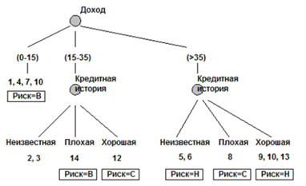
| Для ветви Ки=Н |
Примеры: 2,3. Риск = В,С. |
Энтропии вопросов Дг, П |
| Долг | Для Дг=В (примеры 2): – 1/1*log2(1/1) = 0 бит. Для Дг=Н (пример 3): – 1/1*log2(1/1) = 0 бит. |
1/2*0+1/2*0 = 0 бит. |
| Поручители | Для П=Н (примеры 2,3): –(1/2*log2(1/2) + 1/2*log2(1/2)) =1 бит. | 2/2*1 = 1 бит. |
| Выбор: Долг. Дерево построено. | min(0, 1) = 0 бит. |
Лучшим вопросом в этой ветке дерева будет Долг, так как он полностью гасит всю неопределённость до 0 бит.
В итоге минимальное дерево построено и имеет вид:
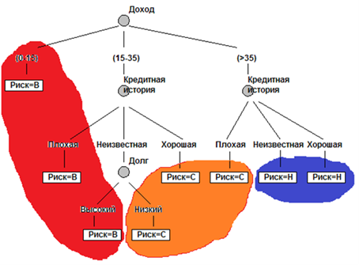
Вместо 36 листьев в нем теперь всего 8 листьев, вместо 22 узлов – 4 узла, а вместо 33 связей – 11, что делает запись экономичной и говорит о том, что изначально в экспериментальных данных существовала скрытая закономерность, которая была выявлена с помощью метода искусственного интеллекта.
Следствие 1. Очевидно, что важнейший фактор для решения о рисках в данном случае - Доход, так как он попал в верхний уровень. Он самый информативный и больше всех остальных факторов снижает неопределённость до 0.564 бит. (Всего в дереве было изначально 1.52 бит неопределённости). На языке банковского служащего это звучит так: «Без дохода > 35 кредит не дадут ни при каких условиях». Второй по важности фактор (второй ярус) – Кредитная история, она уточняет ситуацию после дохода. Далее (на третьем месте по важности) - Долг.
Следствие 2. Показатель «Поручительство» роли при принятии решения не играет. Эксперт зря выяснял у клиентов значение этого фактора (требовал подтверждающие документы), от него, как показывает дерево, ничего не зависит.
Следствие 3. Что хуже для эксперта – неизвестная или плохая кредитная история? Видно, что неизвестная кредитная история лучше для принятия положительного решения о выдаче кредита. Дерево сортирует критерии принятия решения.
Количество связей в дереве уменьшилось до 11 вместо 33. Сложность описания закона выдачи кредита уменьшилась в данном случае в 3 раза.
В случае плохих предметных областей эффективность сжатия может быть намного ниже. Это говорит о том, что в примерах заданной предметной области закономерности изначально мало. Например, таблица случайных чисел дает эффективность сжатия 0%. Такой же результат дает таблица ортогональных примеров.
Следствие 5. Допустим, что экономика находится в кризисе: банк будет выдавать кредиты только в случае низкого риска их возврата, а в случае среднего и высокого риска – отказывать в выдаче кредитов. Заменяем в дереве листья Риск=Высокий и Риск=Средний на Кредит=Нет, а листья Риск=Низкий - на листья Кредит=Да.
Выводим по дереву краткую формулу выдачи кредита: Кредит = (Дд>35)*(1-(К=П)). Здесь показан вариант записи в закодированной числами форме, 0 – Кредит не выдаётся, 1 – Кредит выдаётся. Выражение (1-(К=П)) в числовой области заменяет выражение НЕ (К=П), знак логического И заменяется на знак численного умножения «*», знак логического ИЛИ заменяется на знак числового сложения «+».
На языке алгоритмов это будет выглядеть так, как показано на рисунке/
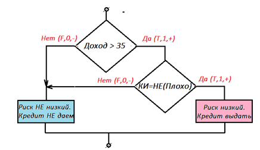
Следствие 6. Чтобы доказать, что найденное дерево и функция принятия решения являются моделью, сделаем прогноз новых данных, которые отсутствуют в таблице. В терминах и записях базы данных это будет выглядеть так.
| Пример решения | Риск (Р) | Кредитная история (К) | Долг (Дг) | Поручительство (П) | Доход (Дд) |
|---|---|---|---|---|---|
| 15 | C | Х | Н | Н | 15 - 35 |
| 16 | В | Х | Н | Н | 0 - 15 |
Так как система может предсказывать новые, ранее неизвестные данные, то она интеллектуальна. База данных к такому не способна.
Следствие 7. Поскольку построена модель, то её в отличие от алгоритма и базы данных можно преобразовать. Решим обратную задачу. Выразим Доход через переменные Кредит и Кредитная история.
Преобразуем правилами дискретной логики модель:
(Дд>35) = 0*((Кредит=1)*(К=П) | ((Кредит=0)*(К=П))) | 1*((Кредит=1)*(1-(К=П))).
Или, упрощая: (Дд>35) = (Кредит=1)*(1-(К=П)).
Иными словами, на вопрос «Какие клиенты имеют доход больше 35 т.р.?» модель даёт ответ «Те, которым дали кредит И у которых неплохая кредитная история!».
Алгоритм на вычисление такого ответа не способен. Если задача изменена – требуются усилия программиста по написанию заново оригинального алгоритма (программы).
Следствие 8. Задача поиска закономерности (формулы) во множестве данных (чисел) в итоге сводится к классификации битовых строк в виде уравнения c минимальным количеством переменных в записи.
Пример базы данных, приведённой к двоичному виду.
| X1 | X2 | X3 | X4 | X5 | X6 | X7 | X8 | X9 | Y |
|---|---|---|---|---|---|---|---|---|---|
| 1 | 1 | 0 | 0 | 1 | 0 | 0 | 0 | 1 | 1 |
| 1 | 0 | 1 | 0 | 1 | 0 | 0 | 1 | 1 | 0 |
Так как для m примеров существует 2m вариантов классификации, что приводит к очень быстрому росту функции при увеличении значения m, то на практике учитывается ограниченное число примеров.
Чем больше примеров, тем компактнее классификация (если, конечно, она содержится изначально в исходных данных).
| X1 | X2 | X3 | X4 | Правила двух примеров | Правила трех примеров | Правила четырех примеров |
|---|---|---|---|---|---|---|
| 1 | 1 | 0 | 0 | X1=1, X4=0, X1+X2+X3+X4=210, (X1=1)&(X4=0). Четыре правила |
X1=1, Х1+Х2+Х3+Х4=210. Два правила, новый пример отбросил часть правил |
Х1=1. Одно правило, количество правил опять уменьшилось |
| 1 | 0 | 1 | 0 | |||
| 1 | 0 | 0 | 1 | |||
| 1 | 0 | 0 | 0 |
При добавлении примеров частные случаи отсеиваются, закон становится более общим.
Конечно, можно в качестве таблицы подсунуть алгоритму ID3 в качестве примеров случайные комбинации. В таких таблицах в принципе нет закономерностей. Обнаружит ли ID3 что-то?
Обнаружит, но закон будет таким же длинным, как и сама таблица. Закон не сожмёт данные. То есть, «законы в пределе информативности это данные».
Закономерности характеризуются количеством сущностей и связей между ними. Подсчитайте количество переменных (элементов) в законе и число операций (связей) с ними – получится оценка сложности закона. Фундаментальные законы максимально просты.
Закон тем более ценен, чем более общим он является. Самые общие законы содержат минимум переменных и операций (F=ma, E=mc2), конечно, если они описывают примеры правильно и таких примеров много.
Со временем, при появлении новых примеров, закон может уточняться. Самый знаменитый пример – уточнение Эйнштейном законов Ньютона. Эйнштейн не опроверг законы Ньютона, но уточнил их дополнительным множителем, дающим поправку в области высоких скоростей, близких к скорости света.
Большие системы (сложные понятия) описываются большими уравнениями (цифровые двойники). В настоящий момент можно составить формальное выражение понятия «самолет» в виде цифрового двойника-модели реального самолета. Это будет очень большая формула. Такая формула может существовать только в памяти компьютера, так как она будет очень громоздкой. Такие формулы обрабатываются (нахождение корней, взятие производных и т.д.) автоматически.
Программирование сводится к сортировкам (Э. Кнут). Моделирование сводится к минимизации уравнений, поиску наиболее компактной укладки пространства многомерными фигурами. Наше дерево можно изобразить в виде геометрических фигур в пространстве признаков (вопросов).
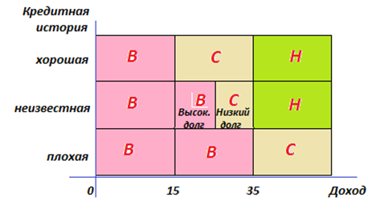
Следствие 9. Посмотрите, как меняется энтропия по мере появления уточняющих вопросов и ответов. Сначала резко, потом, уточняя детали, медленнее, в итоге становясь равной нулю.
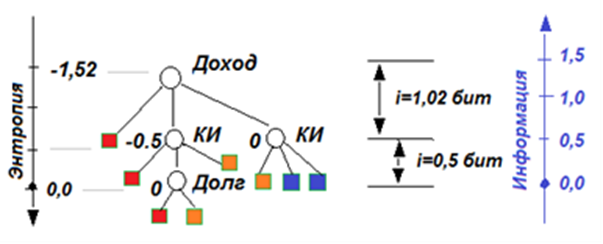
При переходе от Дохода к Кредитной истории энтропия упала с -1.52 до -0.5, то есть было получено 1.52-0.5=1.02 бит информации. При переходе от Кредитной истории к вопросу про Долг получено 0.5 бит информации, а энтропия (неопределённость) стала равной нулю.
Э+I=0.
Энтропия Э переходит в информацию I: приобретение информации уменьшает (гасит) энтропию, а потеря информации увеличивает энтропию системы. В сумме энтропия и информация в закрытой системе постоянны и могут переходить друг в друга.
Процесс перехода E в I – индукция, обобщение, нахождение некоторого порядка в хаосе, выявление закономерности, переход от «числа» (факта) к «букве-операции-уравнению» (модели), проявление интеллектуальности. Поэтому природа, выстраивая в процессе эволюции иерархию, проявляет свойство интеллектуальности, так как упорядочивает материю при росте сложности её организации с помощью своих существующих законов.
Следствие 10. Генетическую связь методов искусственного интеллекта покажем на примере результатов алгоритма ID3 и результатов регрессионной модели.
Перекодируем содержание таблицы исходных данных числами в непрерывной области.
Кредитная история – {0,1,2}={П,Н,Х}
Долг – {0,1}={В,Н}
Поручители – {0,1}={Н,А}
Доход – {0,1,2}={0-15,15-35,>35}
Риск – {0,1,2}={Н,С,В}
Теперь экспериментальная таблица выглядит несколько иначе, но содержит ту же информацию.
| Пример решения | Риск (Р) | Кредитная история (К) | Долг (Дг) | Поручительство (П) | Доход (Дд) |
|---|---|---|---|---|---|
| 1 | 2 | 0 | 0 | 0 | 0 |
| 2 | 2 | 1 | 0 | 0 | 1 |
| 3 | 1 | 1 | 1 | 0 | 1 |
| 4 | 2 | 1 | 1 | 0 | 0 |
| 5 | 0 | 1 | 1 | 0 | 2 |
| 6 | 0 | 1 | 0 | 1 | 2 |
| 7 | 2 | 0 | 1 | 0 | 0 |
| 8 | 1 | 0 | 1 | 1 | 2 |
| 9 | 0 | 2 | 1 | 0 | 2 |
| 10 | 0 | 2 | 0 | 1 | 2 |
| 11 | 2 | 2 | 0 | 0 | 0 |
| 12 | 1 | 2 | 0 | 0 | 1 |
| 13 | 0 | 2 | 0 | 0 | 2 |
| 14 | 2 | 0 | 0 | 0 | 1 |
Пользуясь методом построения регрессионных моделей (тема 5), вычислим коэффициенты A0, A1, …, Am, в линейном уравнении, взятом в виде гипотезы:
Риск = А0+А1*КИ+А2*Долг+А3*Поручители+А4*Доход (модель 1)
Систему уравнений для расчёта запишем в табличном виде:
| A0 | Кредитная история (А1) | Долг (А2) | Поручители (А3) | Доход (А4) | Переменные | Риск | |||
|---|---|---|---|---|---|---|---|---|---|
| 14 | 15 | 6 | 3 | 16 | A0 | 15 | |||
| 15 | 25 | 5 | 3 | 20 | A1 | 11 | Кредитная история | ||
| 6 | 5 | 6 | 1 | 7 | * | A2 | = | 6 | Долг |
| 3 | 3 | 1 | 3 | 6 | A3 | 1 | Поручители | ||
| 16 | 20 | 7 | 6 | 28 | A4 | 8 | Доход |
Решая систему уравнений относительно неизвестных (A0, A1, A2, A3, A4), имеем: А0=2.50; А1=-0.36; А2=-0.25; А3=-0.13; А4=-0.80 или
Риск = 2.5 - 0.36*КИ - 0.25*Долг - 0.13*Поручители - 0.80*Доход (модель 1)
Проверим это решение, сопоставив его с исходной экспериментальной таблицей.
| Пример | Риск (Р) Заданное значение |
Риск (Р) Полученное по модели 1 |
Совпадение заданного значения с расчетным | Кредитная история (К) | Долг (Дг) | Поручительство (П) | Доход (Дд) |
|---|---|---|---|---|---|---|---|
| 1 | 2 | 2.50 → 3 | - | 0 | 0 | 0 | 0 |
| 2 | 2 | 1.34 → 1 | - | 1 | 0 | 0 | 1 |
| 3 | 1 | 1.09 → 1 | + | 1 | 1 | 0 | 1 |
| 4 | 2 | 1.89 → 2 | + | 1 | 1 | 0 | 0 |
| 5 | 0 | 0.29 → 0 | + | 1 | 1 | 0 | 2 |
| 6 | 0 | 0.41 → 0 | + | 1 | 0 | 1 | 2 |
| 7 | 2 | 2.25 → 2 | + | 0 | 1 | 0 | 0 |
| 8 | 1 | 0.52 → 1 | + | 0 | 1 | 1 | 2 |
| 9 | 0 | -0.07 → 0 | + | 2 | 1 | 0 | 2 |
| 10 | 0 | 0.05 → 0 | + | 2 | 0 | 1 | 2 |
| 11 | 2 | 1.78 → 2 | + | 2 | 0 | 0 | 0 |
| 12 | 1 | 0.98 → 1 | + | 2 | 0 | 0 | 1 |
| 13 | 0 | 0.18 → 0 | + | 2 | 0 | 0 | 2 |
| 14 | 2 | 0.70 → 2 | + | 0 | 0 | 0 | 1 |
Выводы. Отметим, что практически во всех случаях (примеры 3-14) имеет место совпадение результата, вычисленного по построенной регрессионной модели, с экспериментальными данными. Исключениями являются 1 и 2 пример таблицы. Тем не менее, приглядевшись, можно увидеть, что тенденцию и результат модель вычисляет правильно, увеличив риск в первом случае и уменьшив его во втором (первый случай действительно хуже второго, поэтому риски выдачи кредита увеличиваются). То есть модель действует точнее, чем эксперт. Аналоговая модель точнее дискретной.
Примечание. Значения коэффициентов регрессионной модели, которые мы нашли, указывают на вес (значимость) отдельных признаков для принятия правильного решения. Наиболее значимы по убыванию величины коэффициента: 0.80 > 0.36 > 0.25 > 0.13, то есть Доход → К → Долг → Поручители. Заметим, что их порядок совпадает со значимостью (важностью), определенной ранее нами методом ID3.
Но ID3 дополнительно указал на отсутствие необходимости вносить в решение признака Поручители. Если в регрессионном моделировании мы сами указываем возможно необходимые признаки, то метод ID3 делает это за нас, минимизируя автоматически их количество. Метод ID3 сам определяет размерность пространства признаков.
Преимуществом регрессии является её аналоговость. Такая модель может показать, например, сколько вносит в решение одна единица Дохода и чем её можно компенсировать.
Например, одна единица Дохода стоит сразу всех вместе взятых по дополнительной единице переменных Кредитная история, Поручители и Долг: 0.8*1?0.36*1+0.25*1+0.13*1. Или единица Дохода примерно соответствует двум единицам Кредитной истории: 0.8*1?0.36*2.
Такая информация дает возможность исследовать чувствительность модели. Соответственно, по значениям коэффициентов регрессии можно судить, какими признаками можно пожертвовать при упрощении модели в первую очередь.
Все более грубые модели:
Риск=А0+А1*Доход+А2*КИ+А3*Долг+А4*Поручители
Риск=А0+А1*Доход+А2*КИ+А3*Долг
Риск=А0+А1*Доход+А2*КИ
Риск=А0+А1*Доход
Риск=А0
Теперь решим ещё раз этот же пример, упростив гипотезу. Так как ранее было показано, что определяющими входными признаками в этом примере являются «Доход» и «Кредитная история», то построим регрессионную модель от этих двух переменных:
Риск = f (КИ, Доход).
Предполагая гипотезу о связи переменных в виде Риск = А0+А1*КИ+А2* Доход, имеем систему уравнений для определения коэффициентов модели 2 в табличном виде:
| A0 | Кредитная история, А1 | Доход, А2 | Переменные | Риск | |||
| 14 | 15 | 16 | A0 | 15 | |||
| 15 | 25 | 20 | * | A1 | = | 11 | Кредитная история |
| 16 | 20 | 28 | A2 | 8 | Доход |
Решая систему уравнений относительно неизвестных (A0, A1, A2), имеем: А0=2.4; А1=-0.30; А2=-0.85 или
Риск = 2.4 - 0.30*КИ - 0.85*Доход (модель 2).
Так же проверим решение второй модели, сопоставив его с исходной экспериментальной таблицей.
| Пример | Риск (Р) Заданное значение |
Риск (Р) Полученное по модели 2 |
Совпадение заданного значения с расчетным | Кредитная история (К) | Доход (Дд) |
|---|---|---|---|---|---|
| 1 | 2 | 2.36 → 2 | + | 0 | 0 |
| 2 | 2 | 1.22 → 1 | - | 1 | 1 |
| 3 | 1 | 1.22 → 1 | + | 1 | 1 |
| 4 | 2 | 2.07 → 2 | + | 1 | 0 |
| 5 | 0 | 0.37 → 0 | + | 1 | 2 |
| 6 | 0 | 0.37 → 0 | + | 1 | 2 |
| 7 | 2 | 2.36 → 2 | + | 0 | 0 |
| 8 | 1 | 0.66 → 1 | + | 0 | 2 |
| 9 | 0 | 0.08 → 0 | + | 2 | 2 |
| 10 | 0 | 0.08 → 0 | + | 2 | 2 |
| 11 | 2 | 1.78 → 2 | + | 2 | 0 |
| 12 | 1 | 0.98 → 1 | + | 2 | 1 |
| 13 | 0 | 0.08 → 0 | + | 2 | 2 |
| 14 | 2 | 1.51 → 2 | + | 0 | 1 |
Выводы. Отметим, что в случаях 1 и 3-14 имеет место совпадение результата, вычисленного по построенной регрессионной модели, с экспериментальными данными.
Построим график полученной функции.
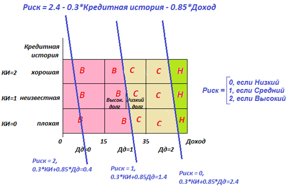
График имеет вид семейства параллельных прямых, каждая из которых соответствует различным значениям переменной Риск = {0,1,2}. График решения методом ID3 и график регрессионной модели совпадают. Но график регрессионной модели в виде наклонной линии точнее показывает решение в пограничных случаях. График решения по методу ID3 набран из прямоугольных дискретных областей, поэтому имеет более грубый вид.
Примеры ситуаций, в которых был использован алгоритм ID3
- США, Чикаго, клиника «Кук Каунти». Узкие места: очереди к узким специалистам, ложный начальный диагноз, больной попадает не к тому врачу.
Введение доврачебного осмотра как попытки разгрузить очередь к узким специалистам. Задача: найти базовые симптомы, повышающие вероятность правильного предварительного диагноза. Решение: введение ЭКГ и уменьшение количества остальных анализов с 5 до 3 увеличило число правильных диагнозов с 75% до 90% и уменьшило очереди к узким специалистам. - США, Пентагон. Виртуальные военные учения на суперкомпьютере. Специалисты запутались в громоздкой системе. Выиграла простота - мотоциклы (оперативная связь) и малые катера (против авианосцев).
- Оптимальная организационная структура департамента. Оптимизация нагрузки на сотрудников с учётом равномерности распределения дел между ними, их способностей и эффективности принятия решений каждым из них. Оптимизация документооборота. Сортировка документов по важности.
- Можно составить модель (формулу) человека на основе его ответов на вопросы. Актуальная проблема – прогноз поведения человека по его информационному портрету в социальной сети. Предсказание очагов напряжённости по информации в социальной сети. Управление обществом через социальную сеть.
Задания
- Придумайте пример, не менее 4-5 признаков, входных переменных (x1,x2,x3,…), влияющих на решение. Опишите, что означают выбранные классы и признаки. Следя за экспертом, запишите решения Y эксперта в нескольких случаях и значения известной при этом информации (x1,x2,x3,…), не менее 15 строк в таблице экспериментов (то есть принятых решений). Постройте минимальное дерево и его логическую функцию (уравнение, модель). Спрогнозируйте новую строку таблицы, неизвестную эксперту ранее. Приведите геометрическую интерпретацию решения. Примеры: цены на жильё в зависимости от его комфортности и местоположения, цены на автомобили разных марок, Устав сухопутных войск, симптомы и болезни, условия получения учеником определённой оценки, получение разряда в спорте.
- Смоделируйте результаты будущего чемпионата мира по футболу, использовав для обучения результаты предыдущих чемпионатов. Предлагается учесть следующие признаки и свойства:
X1 Рейтинг сборной 0-10, 10-20, >20 Можно использовать рейтинг сборных стран, составляемый ФИФА, в котором они упорядочены по силе составов. X2 Рейтинг лучшего игрока >90, 85-90, <85 Можно использовать общий рейтинг игроков мира. Выше рейтинг – лучше игрок. Соответственно Х2 – рейтинг лучшего игрока каждой сборной со значением его в мировом рейтинге. X3 Рейтинг вратаря 85-90, 80-85, <80 Так как вратарь – половина команды, то рейтинг вратаря используем отдельной переменной. X4 Уровень тренера Т, С, Н Тренер настраивает командную игру, помогает игрокам раскрывать свои лучшие качества. Тренер может быть новичком (Н); с серьезным опытом работы в лучших Европейских лигах (Т); работать на постоянной основе в Южной Америке или Азии (С). X5 История побед страны в турнире НП – несколько побед, ОП – одна победа, БП – без побед Играть на чемпионате мира это невероятное давление. Поэтому, если страна выигрывала турнир, то игроки могут почерпнуть опыт у старших товарищей, что даст им преимущество при игре. X6 Текущая форма сборной 1-2, 3-4, 5 Текущая форма сборной оценивается за последние 5 официальных матчей, может быть 1-2 победы, 2-4 победы или 5 побед. Больше побед – сильнее форма, с которой сборная подходит к турниру. X7 Последняя победа на крупном турнире 2016-2021, 2011-2016, <2011, Н Поколения в сборных сменяются обычно раз в 10 лет. Поэтому, если сборная побеждала на крупном международном турнире в последнее время, значит, на турнир сборная едет с практически таким же сильным составом, как и на победном турнире. Если сборная побеждала в последний раз давно, значит поколение сменилось и неизвестно чего от неё ожидать. Если не побеждала ни разу – Н. Y Результат команды в турнире П, Ф, 1/2, 1/4, 1/8, Г П – полуфинал, Ф – финал, Г – выход из группы.
Презентация:
| Лекция 47. Роботы и чувства, три закона робототехники | Лекция 49. Повторение. Закрепление. Обобщение | ||||||||||||||||
|
|||||||||||||||||